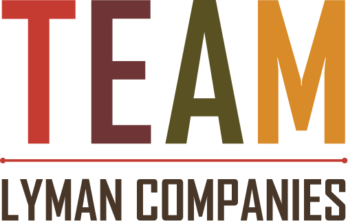
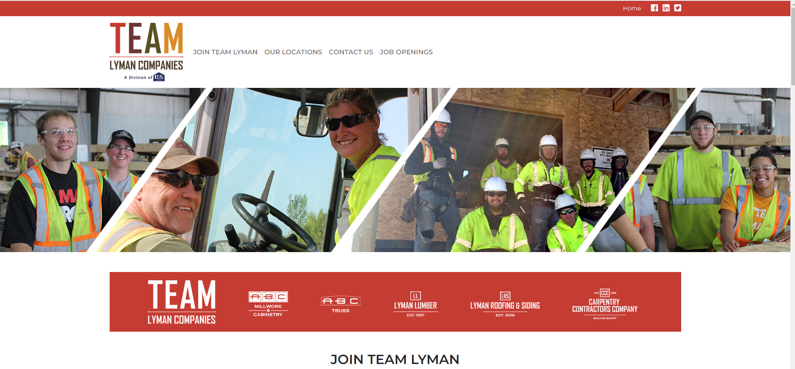
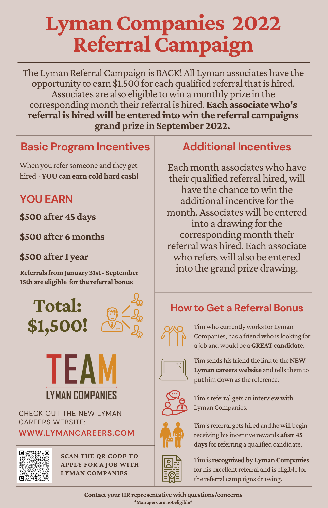
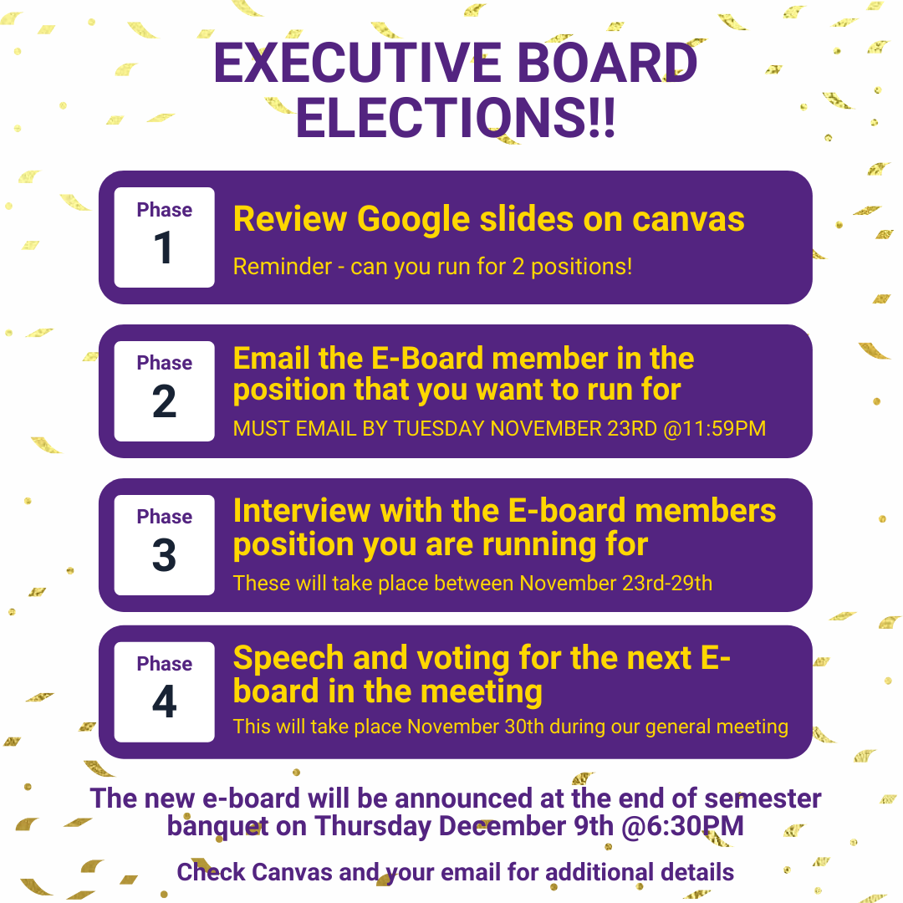
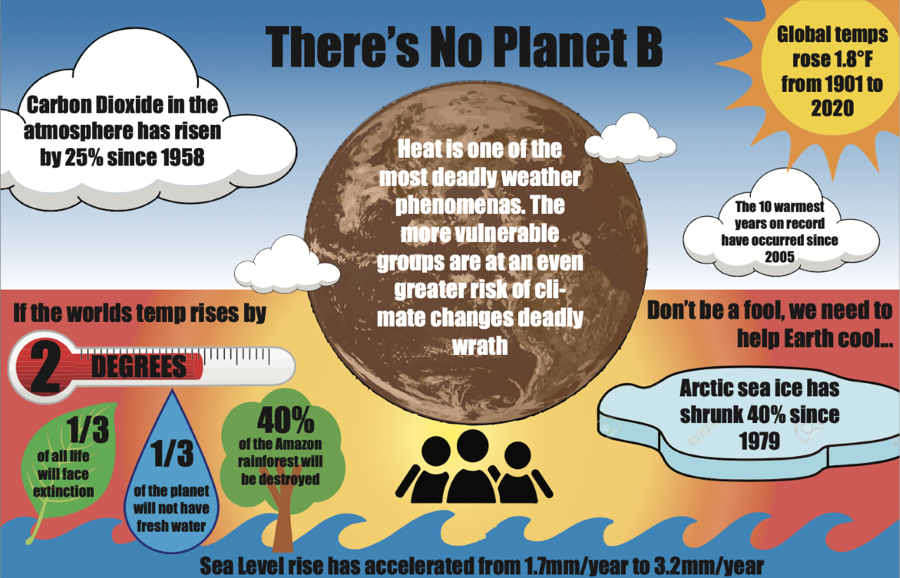

Elizabeth has worked on a number of projects from her time as student, on PSE's executive board, and an intern. Below are some examples of her work she has created on Canva or Adobe Creative Suite.
Elizabeth helped create this recruiting 'Team Lyman Companies' logo for recruiting and assisted in the creation of the new careers website shown below. She also created this flyer that was sent to all associates home addresses.
  Elizabeth spent a lot of time creating social media posts for the business organization. Below are a few examples of the content she created.
Elizabeth created this infographic for a class using Adobe Illustrator.
